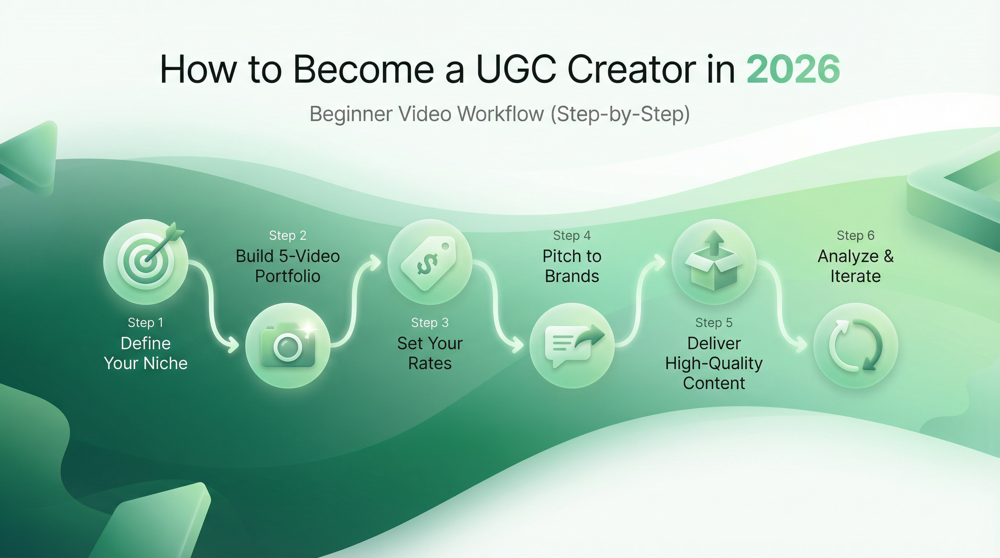
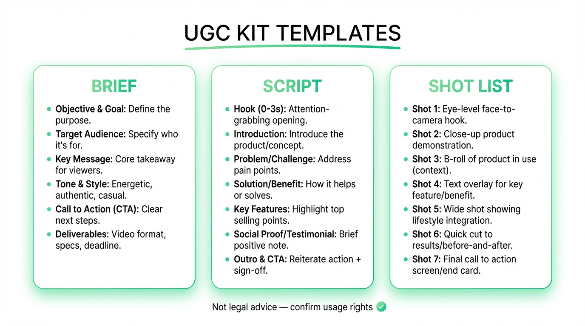
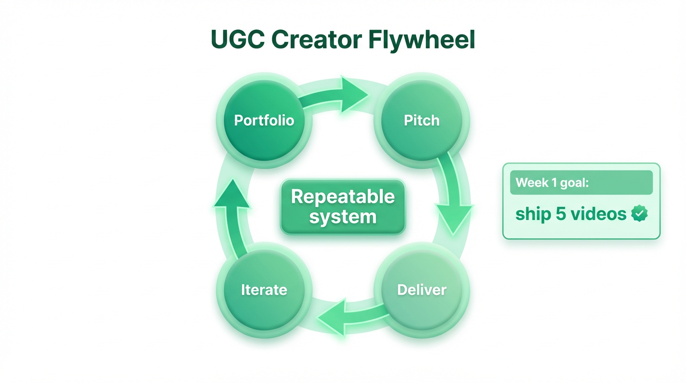

To become a UGC creator in 2026, start with fully AI-generated content from day one—build a 5-video portfolio using end-to-end AI production, package 3 starter bundles, and pitch brands with one concept per video. AI UGC now costs $1-2/video (vs $150-300 traditional), enabling 50-100+ variants per day. The key shift: transparency and compliance separate professionals from amateurs.
I started as a phone-first creator in 2024 filming product demos in my kitchen. Within six months I was using AI tools to script, storyboard, and produce 10x the volume—without losing the authentic feel brands hired me for. This guide is the exact system I built along the way.

The UGC Trust Paradox: AI can now generate the majority of marketing content, yet consumers trust user-generated content more than any other format. The tension—90% of online content projected to be AI-generated by 2025-2026 (Nina Schick, “Deepfakes”), while 79% of consumers say UGC highly impacts their purchasing decisions (Stackla, 2021)—creates the defining opportunity for UGC creators in 2026. But the industry has already moved: 86% of ad buyers are using or planning GenAI for video ads (IAB, 2025), AI video production costs have dropped 65% year-over-year, and GenAI is projected to power 40% of all ads by 2026 (IAB, 2025). The question is no longer whether to use AI, but how transparently you deploy it.
The resolution: transparency is the professional standard. With 82% of marketers already using AI tools daily (Emplifi, 2026), AI-assisted production is the norm, not the exception. Creators who disclose AI involvement build trust; those who hide it get flagged.
Here's why the shift matters: traditional UGC costs $150-300 per video (Billo) when you factor in creator fees, product shipping, coordination overhead, revision rounds, and unusable takes. AI UGC platforms like Argil have pushed production costs to $1-2 per video—a 50-150x cost gap. And the gap keeps widening: this is the Pareto Frontier in action, where AI video costs fall while quality rises every few weeks. Stanford HAI's AI Index 2025 documents a 10x annual decline in inference costs (280x over two years at GPT-3.5 level), and tools like Kling 2.5 Turbo have cut per-video generation costs by 62% in a single release. The solution is a spectrum: Track 1 (fully AI-generated at scale) to Track 2 (AI-assisted, human on camera). An AI-generated UGC ad looks like a real person reviewing a product—same talking-head framing, same casual tone—but produced without scheduling a creator, shipping product, or waiting for revisions. We break down how each track works below.
The numbers confirm the opportunity: search interest for “UGC creator” has grown 8,700%+ since 2021 (Google Trends), the creator economy is projected to reach $480B by 2027 (Goldman Sachs, 2023), and 84% of marketing teams now use AI in content creation (HubSpot, 2025).
Quick Start: Ready to start with fully AI-generated UGC? Try Alici's Video Super Agent for one-click UGC ads →
The psychology is straightforward: people trust peers more than brands. UGC looks and feels like a recommendation from someone who actually uses the product — not a scripted ad read. Research shows this “imperfection bias” works: casual, unpolished content consistently converts better than studio-produced creative because viewers perceive it as more authentic.
The data backs it up. UGC ads generate up to 4x higher click-through rates and 50% lower cost-per-click compared to traditional brand creative (Billo, 2024). Platform algorithms amplify the effect — TikTok and Reels reward native-looking content with more organic reach, meaning UGC-style ads get cheaper distribution on top of better conversion.
This is why the three-track model matters: every track produces content that looks like UGC, whether generated by AI to match the same format (Track 1) or filmed by a real person (Track 2-3).
A UGC creator is a creator hired to produce user-generated-content-style deliverables—short-form videos, photos, or ad creatives—for brands. Unlike influencers, UGC creators sell content assets, not audience reach. You don't need followers to start. In 2026, the line blurs because AI tools let a single creator produce content that previously required a small team—but the business model stays the same: you're paid for deliverables, not distribution.
This is why UGC creators exist as a standalone category: platforms like TikTok Spark Ads let brands turn creator content directly into paid ads—keeping the original likes, shares, and comments—making authentic-feeling video the most valuable ad format.
| Factor | UGC Creator | Influencer |
|---|---|---|
| What you sell | Video assets brands can use | Audience access + posts |
| Pricing | ~$150-500/video (Billo) | $200-1,000+/post (varies) |
| Best for | Conversion creative, A/B testing | Awareness, launches |
| AI impact | Speeds up scripting + variants | Helps captions + editing |
The Three-Track Model defines three UGC creator paths in 2026: Track 1 (Fully AI-Generated) is the recommended starting point—end-to-end AI production at $100-250/video but at 10-100x the volume (production cost as low as $1-2/video on platforms like Argil); Track 2 (AI-Assisted) combines AI-generated scripts and storyboards with human filming at $200-500/video plus faster turnaround; Track 3 (Phone-First) uses traditional phone filming at $150-300/video for creators who prefer full manual control. Most beginners start on Track 1 and add Track 2 for variety.
Example: Real UGC ad style — phone-shot, authentic feel
UGC ad example: authentic, phone-shot style that converts
| If you... | Start with |
|---|---|
| Have zero experience | Track 1 (full AI = fastest ramp-up, no filming needed) |
| Want maximum output per hour | Track 1 (end-to-end AI = 10-100x output) |
| Sell to performance marketers | Track 1 (they need 50-100+ variants for testing) |
| Already make content | Track 2 (AI handles scripts, you control creative) |
| Prefer fully manual control | Track 3 (traditional phone filming, no AI) |
The biggest challenge with AI UGC isn't the technology—it's maintaining the authenticity that makes user-generated content effective in the first place. Viewers judge believability in the first two seconds. Here's what separates AI UGC that converts from AI UGC that gets scrolled past.
Why AI UGC Looks Fake (and How to Fix It)
| Problem | Why It Fails | Fix |
|---|---|---|
| Overly perfect speech | Real people pause, say “um,” restart sentences. Flawless delivery feels scripted, not shared. | Choose platforms with natural speech patterns, or write scripts using actual customer language from reviews and support chats. |
| Unnatural product handling | Real consumers examine packaging, hold products casually, show genuine usage. AI actors often interact too deliberately. | Study your existing customer videos and mirror those authentic micro-behaviors. |
| Production quality mismatch | Real testimonials have imperfect lighting and phone-quality audio. Too-polished AI content signals “ad” instead of “real person.” | Embrace lo-fi aesthetics: selfie-style framing, vertical orientation, natural lighting. |
| Uniform emotional tone | Real customers vary—some calm, some excited, some matter-of-fact. AI content stuck at one energy level feels manufactured. | Vary avatar personalities and emotional registers across your content library. |
The Authenticity Checklist (Track 1 Creators)
Before publishing any AI-generated UGC, verify these micro-details:
Scaling Without Losing Authenticity
Most brands lose authenticity when they scale. The fix: build diversity into your production system from day one.
One beauty brand lifted watch time 31% by adding these micro-authenticity checks to their workflow. A kitchenware brand achieved 2× ROAS by overlaying AI hosts on real product footage rather than using fully synthetic scenes.
Pro tip: The best-performing AI UGC often sounds like it was recorded on an iPhone—raw, personal, real. Don't optimize for polish; optimize for believability.
Your portfolio is proof you can ship content. Track doesn't matter at this stage—brands want to see finished work.
When I built my first portfolio, I used products I already had at home—a skincare routine, a desk lamp, a meal prep kit. None of the brands were paying me yet. But those five videos landed my first two clients within three weeks.
Build 5 videos in your first week:
Every UGC video follows the same structure. Once you internalize this, you can produce scripts in minutes—or let AI generate them and edit for quality.
1) Hook (0-2s): one clear promise
2) Problem (2-5s): name the pain
3) Mechanism (5-10s): what it does / how it works (no fake claims)
4) Demo (10-20s): show it, don't tell
5) Proof (20-25s): real detail (feature, routine, constraint)
6) CTA (last 2-3s): one actionFeed your product brief into Alici's Video Super Agent: input product name + audience + key benefit → get back a 6-block script + shot list + storyboard → edit for voice and accuracy → generate video (Track 1) or film (Track 2).
Test multiple versions with different hooks or captions, then scale what performs—this is also TikTok's official creative testing recommendation (TikTok Ad Creative Guide).

1) Talking head hook (front camera)
2) Product close-up (hands)
3) "Use it" demo (medium shot)
4) Texture/detail shot
5) Before/after (same lighting)
6) Benefit overlay (caption)
7) Social proof (only if provided)
8) FAQ answer clip (5s)
9) CTA clip (product + text)
10) Alternative hook variantUGC BRIEF — [Brand] — [Product] — [Date]
Goal:
- Primary action (click / signup / purchase / install):
Audience:
- Who is this for?
- Pain point / desire:
Offer:
- Core promise:
- Proof points (ONLY what's true):
Constraints:
- Do-not-say claims:
- Must-include:
- Brand tone (3 adjectives):
Deliverables:
- # of videos:
- Length (15s/30s/45s):
- Format (TikTok/Reels/Shorts):
- Captions style:
Usage:
- Organic only or paid usage? (if paid: duration + platforms)UGC creator rates in 2026 range from $100-500 per video depending on track and scope. Track 1 (Fully AI-Generated) prices lower per unit ($100-250) but scales to 10-100x volume—with a production cost floor of $1-2/video on platforms like Argil. Track 2 (AI-Assisted) commands $200-500/video because you deliver scripts, storyboards, and variants alongside the video. Track 3 (Phone-First) benchmarks at $150-300/video for traditional production. In all cases, usage rights are quoted separately—this is the most important pricing principle for new creators.
I learned this the hard way: my first three projects, I quoted a flat rate with no usage-rights line. One brand ran my video as a paid ad for four months. After that, I separated creation fees from usage rights on every quote—and my effective rate doubled.
Pricing above covers content creation. Usage rights (ads/whitelisting/extended licensing) are quoted separately.
This single line prevents the most common beginner mistake: accidentally granting unlimited usage for free.
Not legal advice: usage rights language varies by platform and contract. If you're unsure, review with counsel.
USAGE RIGHTS CHECKLIST (not legal advice)
1) Where can the brand use the content?
- [ ] Organic only (brand socials, email, website)
- [ ] Paid ads (Meta, TikTok, YouTube, etc.)
2) How long?
- [ ] 30 days / 90 days / 6 months / 12 months / perpetual
3) What platforms + placements?
- [ ] TikTok / Reels / Shorts
- [ ] Feed / Stories / Spark Ads / Partnership ads / Whitelisting (if applicable)
4) Usage scope
- [ ] Single campaign only
- [ ] Any future campaigns
- [ ] Global / specific regions
5) Creator account usage
- [ ] Allowlisting / whitelisting requested? (yes/no)
6) Exclusivity
- [ ] Category exclusivity (yes/no) + duration
7) Deliverables + source files
- [ ] Raw footage included? (yes/no)
- [ ] Project files included? (yes/no)
8) Revisions
- [ ] Script revisions: ___ rounds
- [ ] Edit revisions: ___ rounds
9) Disclosure requirements
- [ ] Sponsored / paid partnership labeling required (yes/no)Sources: Billo (UGC rates) · Billo (usage rights)
Start conversations, not closes. Track 1/2 creators: lead with “I deliver scripts + video + 6 hook variants per campaign.”
My first 30 pitches got two replies. The difference was specificity: once I started sending a concrete hook concept instead of a generic portfolio link, my response rate went from ~7% to over 25%.
Hey [name] — I'm a UGC creator focused on [lane]. I drafted a quick 15-30s concept for [brand] (hook + demo). If you're open, I can send the concept + a rough script. Where should I send it?
Subject: UGC concept for [Brand] (15-30s)
Hi [Name],
I'm a UGC creator specializing in [lane] short-form videos for TikTok/Reels.
I have 2 content concepts for [Brand]:
1) [Hook angle] — "I didn't expect this to..."
2) [Hook angle] — "If you struggle with..."
I can send a 6-block script + a 10-shot list so your team can review quickly.
Portfolio: [link]
Best,
[Your name]
DELIVERABLES — [Brand] — [Date]
Video files:
- [ ] 1x final MP4 (1080x1920)
- [ ] 1x captioned MP4 (burned-in)
- [ ] 1x clean MP4 (no captions)
Project notes:
- [ ] Hook used (angle)
- [ ] CTA used
- [ ] Any claims made (confirm approved)
Source files (optional):
- [ ] captions file (.srt)
- [ ] thumbnail frame(s)
Licensing:
- [ ] usage rights confirmed (organic vs paid, duration, platforms)The real money in UGC is iteration. Brands need variants for A/B testing:

TikTok's ad creative guide recommends refreshing creative every 2-4 weeks—even small updates like new hooks or captions can revive performance.
On Track 1, use Alici's Video Super Agent to go from script to finished video in one click. On Track 2, use Alici Video Super Agent to generate hook variants in minutes.
Example: Professional UGC for brand campaigns
Professional UGC example: polished but authentic
TESTING GRID (12 variants)
- Hooks: A / B / C
- Edits: Fast / Slow
- CTAs: CTA1 / CTA2In 2026, UGC creators using AI tools must navigate three regulatory layers: US FTC rules (fines up to $51,744 per violation for undisclosed material connections, plus updated endorsement guidelines covering AI-generated content), the EU AI Act (requiring disclosure when content is AI-generated, effective August 2025), and China's CAC regulations (mandatory labeling of AI-generated or deepfake content since January 2023). Additionally, all major platforms—TikTok, Meta, and YouTube—now require AI-generated content labels.
| Platform | AI Disclosure Rule |
|---|---|
| TikTok | Requires labeling AI-generated content + branded content toggle |
| Meta | AI content labels rolling out; “Paid partnership” for sponsored |
| YouTube | Must disclose “altered or synthetic content” in upload settings |
Bottom line: transparency is the competitive advantage. With 86% of ad buyers already using or planning GenAI for video ads (IAB, 2025), disclosure signals professionalism—not risk.
No. UGC is about producing content brands can use. Some brands prefer a “real customer” vibe over influencer reach. Your portfolio matters more than your follower count.
If content is sponsored, disclosures must be clear and not hidden. In the US, the FTC's endorsement guidance emphasizes clear disclosure when there's a “material connection.” Start with “Paid partnership” or “Sponsored.”
Yes—fully AI-generated content (Track 1) is the recommended starting point for new creators in 2026. With 86% of ad buyers already using or planning GenAI for video ads (IAB, 2025), AI-first production is the industry default.
Don't worry about core skills becoming obsolete. AI video costs are dropping rapidly (10x annual decline per Stanford HAI), but the key skill isn't avoiding AI—it's learning to explore different models and find what works for your content. This is exactly where platforms like Alici AI provide value: access to multiple AI video models, pre-built workflows, and tools like Video Super Agent that turn any script into a UGC ad in one click.
You can write scripts anywhere—ChatGPT, Claude, or by hand. But turning that script into a polished multi-scene video with one prompt? That's what Super Agent does. Tools range from multi-model platforms where you control each step to one-click solutions that handle the full UGC pipeline automatically.
It's permission for the brand to use your content beyond initial delivery—especially for paid ads or extended licensing. Clarify scope (organic vs paid), duration, and platforms.
Rates vary by track and scope: Fully AI-Generated creators (Track 1) price lower per unit ($100-250) but produce at 10-100x the volume—with production costs as low as $1-2/video (Argil)—earning significantly more per campaign. AI-Assisted creators (Track 2) command $200-500 per video because they deliver scripts + variants alongside footage. Phone-First creators (Track 3) typically earn $150-300 per video. Usage rights are always quoted separately and can double the base rate. According to Billo's market data, the median short-form UGC asset clusters around ~$200 per deliverable.
Yes, with disclosure. The FTC requires material connection disclosure, the EU AI Act requires labeling AI-generated content, and China's CAC mandates watermarking. Key rule: always disclose, never fabricate testimonials or false claims.
Increasingly, yes. Performance teams value creators who deliver script + video + hook variants quickly. Position your AI workflow as a production advantage, not a shortcut.
The tension between AI generating most content and consumers trusting UGC most. The resolution: use AI transparently to produce more and better content. AI is the production method—trust comes from the creator behind it.
Yes. Tools like Nano Banana produce photorealistic AI-generated faces and scenes that work for Track 1 UGC visuals — product demos, lifestyle shots, and talking-head thumbnails — without hiring talent or scheduling shoots.
Motion transfer tools let you apply one person's movements to a consistent AI character. Kling Motion Control enables person-to-person transformation — useful for maintaining a recognizable “creator persona” across multiple Track 1 videos without filming yourself. Try it in Alici's image workspace →
No—the opposite. AI video costs are falling 10x per year (Stanford HAI), which means the barrier to entry is lower, but the need for creative direction and model selection is higher than ever. The creators who thrive are those who understand which AI models work for different content types. Platforms like Alici AI let you experiment across models without switching tools—that's the skill that compounds.
Next step: build your 5-video portfolio, then pitch your first 10 brands this week.